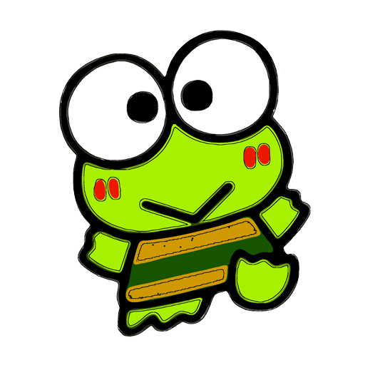

Página de inicio
Bienvenido/a mi repositorio. Aquí irás encontrarás los enlaces a los ejercicios realizados.
Utiliza el menú lateral para navegar entre las prácticas.

Bienvenido/a mi repositorio. Aquí irás encontrarás los enlaces a los ejercicios realizados.
Utiliza el menú lateral para navegar entre las prácticas.